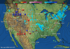
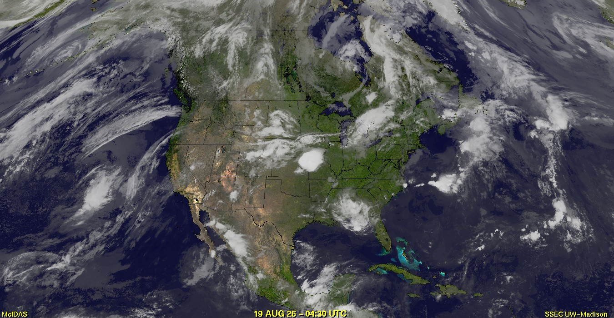
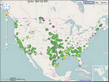
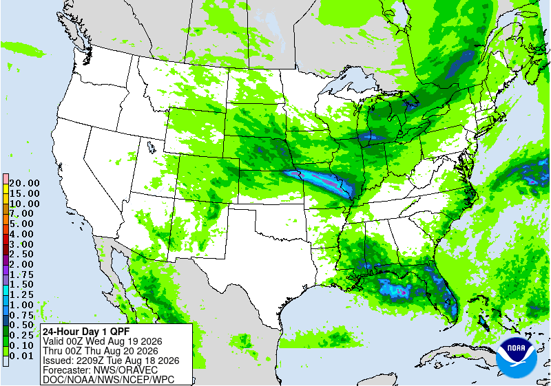
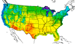
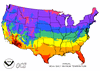

ZHU Training Page archive · Galveston Bay Live Buoy Observations · Source: https://eldoradoweather.com/buoy2/Galveston-Bay/buoy-xhtml.php · Captured 2026-08-19 06:00 UTC
U.S. Conditions
Home
Placerville California Weather
Mobile Live Weather Conditions
Mobile Placerville Forecast
NOAA LIVE Weather Radio
Air Quality Report
Watering Index
Irrigation Index
Burn Index
Current Area Weather Alerts
LIVE I
LIVE II
Live III
Live Weather Gauges
LIVE WebCam
Lightning Radar
Miscellaneous
Moon & Stars
CoCoRaHS Precipation Map
2016 Solar Risings/Settings
Daily Placerville Temp Summary
Historic Daily Wx Extremes
Historic Daily Temp Extremes
Historic Rain/Temp Details
Current Weather Trends
Weather Station History
Historic Weather Data
Normals, Averages & Records
2 to 7 Day Wx Statistics
Mesowest Current Conditions
Monthly & Yearly Records
Daily Weather Details
Daily Rainfall Calendar
Historic Rainfall
Current Weather Graphs
California Average Rainfall
Current U.S. Weather & Info
United States
Current U.S. Weather Conditions
North America Conditions
Alaska Current Conditions
Hawaii Current Conditions
U.S. Weather Roundup w/temps
Annual USA Rainfall
Yesterday U.S. Temps
U.S. Weather Advisory Map
U.S. City Radiation Measurements
Official U.S. Time & Zones
Alaska
Warnings-Watches-Advisories
Annual Rainfall
Live Meso Map Weather
United States Weather
Southwestern Weather Network
Alaska Wx Conditions
Mid-Atlantic Wx Conditions
Mid-South Wx Conditions
Midwest Wx Conditions
Northeast Wx Conditions
Northwest Wx Conditions
The Plains Wx Conditions
Rocky Mountain Wx Conditions
Southeast Wx Conditions
Southwest Wx Conditions
Canada Weather
Atlantic Region Wx Conditions
Ontario Region Wx Conditions
Quebec Region Wx Conditions
Saskatchewan Region Wx Conditions
Western Region Wx Conditions
United Kingdom Weather
United Kingdom Wx Conditions
Europe Weather
Europe Wx Conditions
Austria Wx Conditions
Benelux Wx Conditions
Germany Wx Conditions
Greece/Hellas Wx Conditions
Iberian Peninsula Wx Conditions
Scotland Wx Conditions
Slovakia Wx Conditions
Slovenia Wx Conditions
Oceania Weather
Australia Wx Conditions
New Zealand Wx Conditions
World Weather
Global Affiliated Wx Network
U.S. Climate Central
U.S. City Climate Statistics
Climate Atlas of the U.S.
U.S. States Average Rainfall
El Dorado County Climate
National Climate Graphs
Major Cities Climates
U.S. Severe Wx & Fire Maps
U.S. Fire & Severe Wx Maps
U.S. Wild Fire Outlook
Canada Fire & Severe Wx Maps
National Fire Advisories
Fire Detection Map
Fire Detection Text
U.S. Drought Map
U.S. Fire Danger Map
Motherlode Fire Forecast
Sierra Nevada Forecast
Placerville Burn Index
Current U.S. Wildfire Headlines
U.S. Lightning Center
N. America Lightning Radar
S.W. Pacific Lightning Radar
NorCal CA. Lightning Radar
U.S. Severe Weather Maps
Lightning Satellite Mapper
Goes West Lightning Sat
United States Lightning Sat
Goes East Lightning Sat
W. U.S. & E. Pac Lightning Sat
Earthquake-Volcano-Monsoon
Live Global Earthquakes >= 3m
Live Global Earthquakes >= 1m
Global Monsoons
Live Global Volcano's
Canada Quake Map
United Kingdom Quake Map
Snow Depths & Rainfall Totals
U.S. 3 Day Precip Type Forecast
U.S. Snow Depths
U.S. Observed Precipitation
National Snow Accumulation
Northern Hemisphere snow
Snow Probabilities & Percentile
U.S. Snow Analyses Maps
U.S. First Freeze Dates
U.S. First Snow Dates
California Rainfall Totals
California Hydrologic Resources
Donner Snowfall
Historic Global Climate Maps
World Rainfall
Snow Cover
World Fires
Cloud Fraction
Land Surface Temperatures
Land Surface Temp Anomalies
Sea Surface Temperatures
Sea Surface Temp Anomaly
Water Vapor
Net Radiation
Vegetation
Carbon Monoxide
Chlorophyll
Aerosol Optical Depth
U.S. Cities Current Air Quality
U.S. Flight Rules
U.S. Forecast
Marine
World Buoy Directory Directory
Bodega Harbor Tide
Norcal Rivers & Lakes
U.S. Forecast Maps & Info
U.S. Weather Alerts Map
1-7 Day Forecast Maps
U.S. Severe Weather Maps
Today's U.S. High Forecast
Today's U.S. Low Forecast
U.S. Forecast Discussions
U.S. Hazardous Weather Outlook
U.S. Severe Weather Forecast
Graphical Forecast
U.S. Station Wx Story
Cloud Cover Map Index
Predominant Weather Index
High Wind Speed Index
Wave Height Index
National Parks Forecasts
Weather Radio Index
Convective Outlook
U.S. Convective Outlook
U.S. Convective Chances
Severe Wx Reports/Maps
Active Warnings & Advisories
ALL Severe Wx Maps
SPC Mesoscale Analysis
Severe Weather Reports
Drought Monitor
Drought Monitor - Animated
Drought Related Maps
Ultra Violet [UVI] Index
United States [UVI] Index
Placerville, CA [UVI] Index
U.S. Pollen Report
Rainfall Forecast Maps
U.S. Precipitation Forecast Loop
72hr Rainfall Forecast
3 Month Rain/Temp Outlook
Total Precipitable Water
Rainfall Probability
Precipitation Type Forecast
North America Forecast
U.S. 6 Hour Forecast Charts
Current Rainfall Data
Excessive Rainfall Forecast
Temp/Precip 3mo Outlook
River & Lake Stages
U.S. River & Stream Stages
Northern CA River & Lake Stages
Forecast Maps & Data
Maps & Radar
Smoke
U.S. & Canada Smoke Forecast
Radar
U.S. Interactive Radar Map
U.S. Regional Radar Maps 2
U.S. Regional Radar Maps
U.S. Fullpage Radar Map
Canada Radar Map
U.S. Fire Map
U.S. Observations Map
Tropical Storms Map
Alaska Radar Map
Northeast U.S. Radar Map
Southeast U.S. Radar Map
U.S. East Coast Radar Map
N. Rockies Radar Map
S. Mississippi Radar Map
Central Great Lakes
Pacific NW Radar Map
Pacific SW Radar Map
Southern Plains Radar Map
S. Rockies Radar Map
Upper Mississippi Valley
Hawaii Radar Map
Puerto Rico Radar Map
U.S. City Radar with controls
U.S. City Radar with out controls
Large US Radar
XLarge U.S. Radar
World Lightning Radar
Western U.S. Weather Maps
Eastern U.S. Weather Maps
NorCal Inland Radar
NorCal Coastal Radar
NorCal Northwest Coast
Central CA. Radar
Southern CA. Radar
Satellite Imagery
Satellite Directory Listings
GOES-EAST Satellite Directory
GOES-WEST Satellite Directory
Tropical Satellite with Old Filters
Western U.S. Radar & Satellite
Eastern U.S. Radar & Satellite
Various Maps Page
United States Satellite
U.S. Color Infrared
U.S. Color Infrared XLarge
U.S. Visible
U.S. Infrared
U.S. Water Vapor
U.S. Satellite w/Radar
N America Rainfall Forecast
N America Rainfall Forecast
North America IR Satellite
U.S. Multi Satellite Viewer
U.S. Interactive Infrared Sat
Xlarge U.S. Infrared (B/W) Satellite
Xlarge U.S. Visible Satellite
Xlarge U.S. Water Vapor Satellite
Western U.S. & East Pacific
Western U.S. Color Topo
Northeast Pacific Topo WV
N.E. Pacific Color IR
Entire N. Pacific Sat Color IR
Western U.S. VIS
Western U.S. IR
Western U.S. WV
Western U.S. AVN
Western U.S. Rainbow
Western U.S. RGB
Northeast Pacific VIS
Northeast Pacific WV
Northeast Pacific AVN
Northeast Pacific Rainbow
Northeast Pacific RGB
Northeast Pacific X-Large IR
Northeast Pacific X-Large VIS
World Sea Temperatures
Eastern U.S. & West Atlantic
Western Atlantic Color Topo IR
Western Atlantic Color WV
Western Atlantic Color IR
Eastern U.S. VIS
Eastern U.S. IR
Eastern U.S. WV
North Atlantic VIS
North Atlantic IR
North Atlantic WV
Western Atlantic Topo IR
Western Atlantic Color WV
Western Atlantic Color IR
Western Atlantic X-large VIS
Western Atlantic X-large IR
U.S. - Atlantic - Pacific
W. Atlantic & East U.S. Large
South America IR Satellite
Hemispheric Half Disk Satellite
GOES-WEST - U.S. & Pac IR2
GOES-WEST - U.S. & Pac IR4
GOES-WEST - U.S. & Pac VIS
GOES-WEST - U.S. & Pac WV
GOES-EAST - W. Atl & U.S. WV
GOES16 - Americas GeoColor
GOES16 - Americas Infrared4
GOES16 - Americas Visible
GOES16 - Americas WV
MET-PRIME - UK & Europe IR
MET-PRIME - UK & Europe VIS
MET-PRIME - UK & Europe WV
COMS - W Pac & Japan IR
COMS - W Pac & Japan Vis
COMS - W Pac & Japan WV
HIMAWARI - W Pac-Guam IR
HIMAWARI - W Pac-Guam VIS
HIMAWARI - W Pac-Guam WV
HIMAWARI - W Pac-Guam RGB
Hemispheric Full Disk Satellite
GOES-EAST 16 GeoColor
GOES-EAST 16 Longwave IR
GOES-EAST 16 WV IR
GOES-WEST 17 GeoColor
GOES-WEST 17 Longwave IR
GOES-WEST 17 WV IR
GOES-WEST 5-Day IR Sat
GOES-WEST 5-Day VIS Sat
GOES-WEST 5-Day WV Sat
MET-PRIME - Eur. & Africa IR
MET-PRIME - Eur. & Africa VIS
MET-PRIME - Eur. & Africa WV
HIMAWARI - W Pac to Aus IR
HIMAWARI - W Pac to Aus VIS
HIMAWARI - W Pac to Aus WV
HIMAWARI - W Pac & Aus RGB
COMS-1 - W Pac to Aus IR
COMS-1 - W Pac to Aus VIS
COMS-1 - W Pac to Aus WV
FY2G - Ind Ocean & China IR
FY2G - Ind Ocean & China VIS
FY2G - Ind Ocean & China WV
MET-IODC - Africa-Mideast IR
MET-IODC - Africa-Mideast VIS
MET-IODC - Africa-Mideast WV
Extra Wide View Satellite
World Composite Satellite
Asia, Pacific, U.S. IR Sat
Asia, Pacific, U.S. WV Sat
U.S., Atlantic, Asia IR Sat
U.S., Atlantic, Asia WV Sat
Indian, Australia, Pacific IR Sat
Indian, Australia, Pacific WV Sat
Western Atlantic & Pacific
West Atlantic Color Topo IR
West Atlantic Color Sat IR
West Atlantic Satellite IR
W Atlantic Sat Color Topo WV
West Pacific Color Topo IR
West Pacific Color Sat IR
West Pacific Satellite IR
West Pac Sat Color Topo WV
S Pacific Color Topo IR
SSW Pacific Ocean Color IR
SSW Pacific Satellite IR
S Pac Sat Color Topo WV
S. Pacific Sat Color Topo IR 2
S. Pacific Sat Color IR 2
S. Pacific Sat WV 2
N. Pacific GeoColor Satellite
N. Pacific WV Satellite
UK & Europe Satellite
UK & European Half Disk Sat VIS
UK & European Half Disk Sat IR
UK & Europe Half Disk Sat WV
Europe 12hr Satellite Loop
Europe 24hr Satellite Loop
Spain & Portugal IR Satellite
Europe IR Color Topo Satellite
Indian Ocean Satellite
Indian Ocean Color Topo IR
Indian Ocean Sat Color IR
Indian Ocean Satellite IR
Indian Ocean Color Topo WV
SE Indian Ocean Color Topo IR2
SSE Indian Ocean Color IR
SSE Indian Ocean Satellite IR
SE Indian Ocean Color Topo WV
Africa Satellite
Eastern Hem Full Disk IR Sat
Eastern Hem Full Disk VIS Sat
Eastern Hem Full Disk WV Sat
NW Indian Ocean Color Topo IR
NW Indian Ocean Sat Color IR
NW Indian Ocean Sat IR
NW Indian Ocean Color WV
Global Satellite
Entire World IR Satellite
Global Wide View Satellite
Canada Satellite
National Satellite
Canada GeoColor IR Satellite
Canada Xlarge IR Sat Photo
Canada Infrared Sat Photo 1
Canada Infrared Sat Photo 2
Canada Visible Sat Photo
U.S. & Canada Visible
Canada Composit w/ Arctic
Regional Satellite
West Canada Xlarge IR Sat
East Canada Xlarge IR Sat
Arctic & Antarctic IR Sat
Arctic Infrared Latest Image
Arctic Infrared Satellite
Arctic Visible Satellite
Arctic Water Vapor Satellite
Antarctica Infrared Latest Image
Antarctica Infrared Satellite
Antarctica Visible Satellite
Antarctica Water Vapor Satellite
Alaska Satellite
Alaska GeoColor IR Satellite
Alaska Longwave IR Satellite
Alaska Shortwave IR Satellite
Alaska WV IR Satellite
Hawaii Satellite
Hawaii GeoColor IR Satellite
Hawaii Longwave IR Satellite
Hawaii Shortwave IR Satellite
Hawaii WV IR Satellite
U.S. Fire Monitoring Satellite
Western U.S. Visible
Pacific Northwest
Pacific Southwest
U.S. Pacific Coast
Central Alaska
SE Alaska & BC Canada
Idaho, Nevada & Utah
Nevada, Arizona & New Mexico
Texas & Oklahoma
Models
Surface Analysis Dirctory
North America Models
HRRR Hourly - U.S. High Res
HRRR-SubHourly - High Res
RAP - (Rapid Refresh) Listings
RUC - (Rapid Update) Listings
HREF - Listings
HREF U.S. Southwest Listings
SREF Listings
GFS Listings
GEFS Ensemble Listings
GEFS Spaghetti Listings
GFS Alaska Listings
NAM Listings
NAEFS Listings
U.S. Color Surface Map
U.S. Surface Map
Current U.S. Mesoscale Alerts
U.S. SPC Mesoscale Analysis
Western U.S. Surface Map
Midwest Surface Map
Southeast U.S. Surface Map
Canada Surface Map
Gulf-Mexico-Caribbean Sur Map
U.S. GFS-LAMP Analysis
Eastern & Western U.S.
HIRESW NMMB UTC-00 Listing
HIRESW NMMB UTC-12 Listing
HIRESW ARW UTC-00 Listing
HIRESW ARW UTC-12 Listing
Eastern U.S. Surface Map
E. U.S. Coast Surface Map
Western U.S. Surface Map
W U.S. Coast Surface Map
Alaska Models
GFS Listings
HIRESW NMMB UTC-18 Listing
HIRESW ARW UTC-18 Listing
Alaska U.S. Surface Map
Polar Models
GFS Listings
GEFS Ensemble Listings
Arctic Models
GFS Listings
GEFS Ensemble Listings
Europe Models
GFS Listings
GEFS Ensemble Listings
GEFS Spaghetti Listings
North Pacific Models
GFS Listings
GEFS Ensemble Listings
GEFS Spaghetti Listings
WW3 UTC-00 Wind & Waves
WW3 UTC-06 Wind & Waves
WW3 UTC-12 Wind & Waves
WW3 UTC-18 Wind & Waves
N Pacific Color Surface Map
N Pacific Xlarge Surface Map
East Pacific Models
GFS Listings
GEFS Ensemble Listings
GEFS Spaghetti Listings
WW3 UTC-00 Wind & Waves
WW3 UTC-06 Wind & Waves
WW3 UTC-12 Wind & Waves
WW3 UTC-18 Wind & Waves
Atlantic Models
GFS Listings
GEFS Ensemble Listings
GEFS Spaghetti Listings
WW3 UTC-00 Wind & Waves
WW3 UTC-06 Wind & Waves
WW3 UTC-12 Wind & Waves
WW3 UTC-18 Wind & Waves
Western North Atlantic Models
GFS Listings
GEFS Ensemble Listings
GEFS Speghtti Listings
WW3 UTC 00z Wind & Waves
WW3 UTC 06z Wind & Waves
WW3 UTC 12z Wind & Waves
WW3 UTC 18z Wind & Waves
Caribbean Models
GFS Listings
GEFS Ensemble Listings
GEFS Speghtti Listings
WW3 UTC 00z Wind & Waves
WW3 UTC 06z Wind & Waves
WW3 UTC 12z Wind & Waves
WW3 UTC 18z Wind & Waves
Atlantic & Pacific Models
WW3 UTC 00z Wind & Waves
WW3 UTC 06z Wind & Waves
WW3 UTC 12z Wind & Waves
WW3 UTC 18z Wind & Waves
Hawaii U.S. Surface Map
N Atlantic Color Surface Map
Tropical Atlantic Surface Map
Tropical Pacific Surface Map
South Pacific Models
GFS Listings
GEFS Ensemble Listings
GEFS Spaghetti Listings
Africa Models
GFS Listings
GEFS Ensemble Listings
GEFS Spaghetti Listings
Asia Models
GFS Listings
GEFS Ensemble Listings
GEFS Spaghetti Listings
India & Pakistan
GFS Listings
GEFS Ensemble Listings
GEFS Spaghetti Listings
Australia
GFS Listings
GEFS Ensemble Listings
MSLP 1000-500 Thickness
Surface 10m Winds
Surface MSLP Precip
Surface MSLP Thickness
Surface Temperature
Wave Height & Directon
South America
GFS Listings
GFS Ensemble Listings
GFS Spaghetti Listings
N. America - U.S. Surface Maps
U.S. HPA Layer Models
NE. Pacific 700-850-HPA Layer
NE. Pacific 500-850-HPA Layer
NE. Pacific 400-850-HPA Layer
NE. Pacific 300-850-HPA Layer
NE. Pacific 250-850-HPA Layer
NE. Pacific 200-700-HPA Layer
W. Atlantic 700-850-HPA Layer
W. Atlantic 500-850-HPA Layer
W. Atlantic 400-850-HPA Layer
W. Atlantic 300-850-HPA Layer
W. Atlantic 250-850-HPA Layer
W. Atlantic 200-700-HPA Layer
U.S. Converge & Diverge
NE. Pacific Convergence Sat
NE. Pacific Divergence Sat
W. Atlantic Convergence Sat
W. Atlantic Divergence Sat
U.S. Wind Shear & Vorticity
NE. Pacific Wind Shear
NE. Pacific Wind Shear Knots
NE. Pac 850 Relative Vorticity
W. Atlantic Wind Shear
W. Atlantic Wind Shear Knots
W. Atlantic Mid Lvl Wind Shear
W. Atlantic 850 Rel Vorticity
North Polar Ice Drift
Canada
Radar & Satellite
Radar
Canada Radar
Pacific Province Radar
Prairies Province Radar
Ontario Province Radar
Quebec Province Radar
Atlantic Province Radar
Canada Regional Radar
Canada Radar Status
Canada Aviation Webcams
N. America Lightning Strikes
National Satellite
Canada GeoColor IR Satellite
Canada Infrared Sat Loop
Canada Xlarge IR Sat Photo
Canada Infrared Sat Photo 1
Canada Infrared Sat Photo 2
Canada Visable Sat Photo
Canada Composit w/ Arctic
Regional Satellite
West Canada Xlarge IR Sat
East Canada Xlarge IR Sat
Canada Fire
Canada Fire Central
Canada Fire Detections
Current Conditions
Canada Current Conditions
AB Current Conditions
BC Current Conditions
MB Current Conditions
NB Current Conditions
NL Current Conditions
NS Current Conditions
ON Current Conditions
PE Current Conditions
QC Current Conditions
SK Current Conditions
Canada Statements & Alerts
Marine Warnings & Forecast
Canada Sea Ice Charts
Canada Climate Directory 1
Canada Climate Directory 2
Canada Average Rainfall
Recent Canada Earthquakes
World Wx
World Weather Information
World Lightning Radar
Global Lightning Radar
North America Lightning Radar
Europe Lightning Radar
Central Europe Lightning Radar
Southeast Europe Lightning Radar
UK Lightning Radar
Africa/Mideast Lightning Radar
South Africa Lightning Radar
Australia & N.Z. Lightning Radar
New Zealand Lightning Radar
Asia Lightning Radar
South America Lightning Radar
S.W. Pacific U.S. Lightning Radar
Global Total Precipitable Water
World Climate Directory
World Temperature Extremes
World Drought Map
World Wind Direction Animation
World High Temperatures Map
World Low Temperatures Map
World Sea Surface Temps
World Realtime Maps
World Annual Temperatures Map
World Satellite Directory
Entire World IR Satellite
XLarge World IR Satellite
Western Hemisphere Sat
Antarctica Composite Sat IR
Antarctica Satellite Photo
World Current Conditions
World Current Conditions
N. America Current Conditons
U.S. Current Conditons
Alaska Current Conditons
Hawaii Current Conditons
Africa Current Conditons
Australia Current Conditons
Canada Current Conditons
Caribbean Current Conditons
Central America Conditons
Eastern Europe Current Conditons
Middleeast Current Conditons
Mexico Current Conditons
New Zealand Conditons
North Asia Current Conditons
South America Current Conditons
South Asia Current Conditons
UK Current Conditons
W. Europe Current Conditons
Europe Infrared Satellite
Europe Infrared Satellite
Alps Infrared Satellite
Balkans Infrared Satellite
Baltic Infrared Satellite
France Infrared Satellite
Germany Infrared Satellite
Greece Infrared Satellite
Hungary Infrared Satellite
Italy Infrared Satellite
Netherlands Infrared Satellite
Poland Infrared Satellite
Russa Infrared Satellite
Scandinavia Infrared Satellite
Southeast Europe IR Satellite
Spain Infrared Satellite
Turkey Infrared Satellite
UK Infrared Satellite
Africa Infrared Satellite
Africa Infrared Satellite
Algeria Infrared Satellite
Canary Islands IR Satellite
Cameroon Infrared Satellite
Central Africa Infrared Satellite
Chad Infrared Satellite
Congo Infrared Satellite
Egypt Infrared Satellite
Ethiopia Infrared Satellite
Israel Infrared Satellite
Libya Infrared Satellite
Madagascar Infrared Satellite
Morocco Infrared Satellite
Namibia Infrared Satellite
Saudi Arabia IR Satellite
Somalia Infrared Satellite
South Africa IR Satellite
Sudan Infrared Satellite
Tanzania Infrared Satellite
Tunisia Infrared Satellite
West Africa IR Satellite
Zambia Infrared Satellite
Europe Animated Radar
Europe Animated Radar
Alps Animated Radar
Balkans Animated Radar
Baltic Animated Radar
France Animated Radar
Germany Animated Radar
Greece Animated Radar
Hungary Animated Radar
Netherlands Animated Radar
Poland Animated Radar
Russia Animated Radar
Scandinavia Animated Radar
Southeast Europe Radar
Turkey Animated Radar
Africa Animated Radar
Africa Animated Radar
Algeria Animated Radar
Australia & N. Zealand Radar
Cameroon Animated Radar
Canary Islands Radar
Central Africa Radar
Chad Animated Radar
Congo Animated Radar
Egypt Animated Radar
Ethiopia Animated Radar
Israel Animated Radar
Libya Animated Radar
Madagascar Animated Radar
Morocco Animated Radar
Namibia Animated Radar
Saudi Arabia Animated Radar
Somalia Animated Radar
South Africa Animated Radar
Sudan Animated Radar
Tanzania Animated Radar
Tunisia Animated Radar
West Africa Animated Radar
Zambia Animated Radar
Africa
Africa/Mideast Lightning Radar
Africa Current Conditions
Africa Infrared Satellite
Africa Visible Satellite
Africa Animated Radar
Eastern Hem Full Disk IR Sat
Eastern Hem Full Disk VIS Sat
Eastern Hem Full Disk WV Sat
NW Indian Ocean Color IR
NW Indian Ocean Sat Color IR
NW Indian Ocean Sat IR
NW Indian Ocean Color WV
South Africa
S. Africa Current Conditions
South Africa IR Satellite
South Africa Vis Satellite
South Africa Animated Rader
South Africa Lightning Radar
Eastern Hemisphere IR Sat
Eastern Hemisphere VIS Sat
Asia - Northern & Central
Northern Asia Current Conditions
N. Asia Current Conditions
Asia Lightning Radar
Asia - Eastern & Southeastern
Asia Lightning Radar
West Pacific Color Topo IR
West Pacific Color Sat IR
West Pacific Satellite IR
West Pac Sat Color Topo WV
Asia - Southern & Southwest
S. Asia Current Conditions
Mid East/Asia Lightning
Asia Lightning Radar
Indian Ocean Color Topo IR
Indian Ocean Sat Color IR
Indian Ocean Satellite IR
Indian Ocean Color Topo WV
Europe - British Isles
Live UK Weather Alerts
Current Weather Conditions
British Iles IR Satellite
British Iles VIS Satellite
British Isles Radar
UK & Ireland Radar
Western Europe Radar
British Isles Radar
Western Europe Radar Combo
UK-Ireland Radar Loop
Europe Live Lightning Radar
Satellite Imagery
Europe Infrared Satellite
Europe Visible Satellite
British Isles Infrared Satellite
British Isles Visible Satellite
British Isles IR Closeup Sat
UK & European Half Disk Sat VIS
UK & European Half Disk Sat IR
UK & Europe Half Disk Sat WV
Europe 12hr Satellite Loop
Europe 24hr Satellite Loop
Spain & Portugal IR Satellite
Europe IR Color Topo Satellite
Average Rainfall
Europe Annual Rainfall Map
Ireland Annual Rainfall Map
British Isles Ave Jan. Rain
British Isles Ave July Rain
British Isles Rainfall Forecast
UK Cities Live Conditions
Live Current Conditions Map1
UK Live Weather Map
Scotland Live Weather Map
UK & Ireland Lightning Radar
British Isles Buoy's
Recent UK Earthquakes
24-168 Hr Temp Forecast
Total Precipitable Water
Anomoly Precipitable Water
Europe - Western
W. Europe Current Conditions
Live Europe Weather Alerts
Live Wx Conditions Map
Austria
Live Austria Weather Alerts
Current Weather Conditions
Austria Infrared Satellite
Austria Visible Satellite
Belgium
Current Weather Conditions
Live Belgium Weather Alerts
Belgium Infrared Satellite
Belgium Visible Satellite
Belgium Live Weather Map
France
Live France Weather Alerts
France Radar Loop
France Buoy's
France Live Weather Map
Germany
Live Germany Weather Alerts
Germany Radar Loop
Germany Radar2
Germany Live Weather Map
Greece
Live Greece Weather Alerts
Greece Live Weather Map
Netherlands
Live Netherland Alerts
Weather Conditions Map
Europe Satellite Imagery
Europe Infrared Satellite
Europe Visible Satellite
UK & European Half Disk Sat VIS
UK & European Half Disk Sat IR
UK & Europe Half Disk Sat WV
Europe 12hr Satellite Loop
Europe 24hr Satellite Loop
Spain & Portugal IR Satellite
Europe IR Color Topo Satellite
Europe Lightning Radar
Europe Lightning
1
Europe Lightning
2
Europe Lightning
3
Europe Live Lightning Radar
Central Europe Lightning Radar
Southeast Europe Lightning Radar
Western Europe Radar
European Lightning Radar Sat
Total Precipitable Water
Precipitable Water Anomaly
Europe - Eastern
Europe Current Conditions
Europe Animated Radar
Europe Severe Weather Map
Eastern Europe IR Satellite
Eastern Europe VIS Satellite
UK & European Half Disk Sat VIS
UK & European Half Disk Sat IR
UK & Europe Half Disk Sat WV
Europe 12hr Satellite Loop
Europe 24hr Satellite Loop
Europe Live Lightning Radar
Poland Live Weather Map
Slovakia Live Weather Map
Slovenia Live Weather Map
Israel
Live Israel Weather Alerts
Israel Current Conditions
Israel Animated Radar
Live Israel IR Satellite
Live Israel VIS Satellite
Caribbean
Caribbean Current Conditions
Total Precipitable Water
Caribbean Visible Satellite
Caribbean Visible/IR Satellite
Greenland
Arctic Infrared Satellite
Mexico
Mexico Current Conditions
Mexico GeoColor Satellite
Mexico Color Topo Sat IR
Mexico Color Topo Sat2 IR
North America Satellite IR
Mexico & Southwest U.S. Sat
Middle East
Middleeast Current Conditions
Middleeast Animated Radar
Middleeast IR Satellite
Middleeast VIS Satellite
Lightning Radar
Oceania - Australia
Australia Current Conditions
Australia Animated Radar
Australia Annual Climate
Total Precipitable Water
Anomaly Precipitable Water
Australia Rainfall Averages
Australia Maximum Temps
Australia Minimum Temps
Australia Lightning Radar
Australia Satellite Listings
Oceania - New Zealand
New Zealand Wx Conditions
New Zealand Lightning Radar
Total Precipitable Water
Anomaly Precipitable Water
S Pacific Sat Color Topo IR
S Pacific Satellite Color IR
S Pacific Sat Color Topo WV
S. Pacific Sat Color Topo IR 2
S. Pacific Sat Color IR 2
S. Pacific Sat WV 2
North America
N. America Current Conditions
N. America Lightning Radar
N. America IR Color Satellite
N. America Precipitable Water
South America
S. America Current Conditions
South America Lightning Radar
Daily Rainfall Map
Northern South America Sat
Southern South America Sat
South America Color IR
South America Fulldisk IR
South America Satellite IR
South America Color IR
South America Satellite VIS
Central America
Central America Current Conds
Central America GeoColor Sat
Central America WV Sat
Tropical
MAIN Tropical Storm Center
GOES-EAST Satellite Directory
GOES-WEST Satellite Directory
Tropical Satellite with Old Filters
Global Precipitable Water
Global (Africa Centric)
Global (Pacifc Ocean Centric)
North America
United States
North Atlantic
East Pacific
West Pacific
South Pacific
Indian Ocean
Australia/Indonesia
Northern South America
Southern South America
More
Historic Global Maps
World Rainfall
Snow Cover
World Fires
Cloud Fraction
Land Surface Temperatures
Land Surface Temp Anomalies
Sea Surface Temperatures
Sea Surface Temp Anomaly
Water Vapor
Net Radiation
Vegetation
Carbon Monoxide
Chlorophyll
Aerosol Optical Depth
Weather Documents
Twilight Informational Page
UTC & GMT Time Conversion
Snow to Water Conversion
Historic El Nino Maps
Natural Science
NOAA Pic of the Day
Greatest Quakes Since 1900
Placerville CA Wx Records
Placerville Mobile Live
Live Weather Gauges
Moon & Stars
CoCoRaHS Precipation Map
2016 Solar Risings/Settings
Daily Placerville Temp Summary
Historic Daily Wx Extremes
Historic Daily Temp Extremes
Historic Rain/Temp Details
Current Weather Trends
Weather Station History
Historic Weather Data
Normals, Averages & Records
2 to 7 Day Wx Statistics
Mesowest Current Conditions
Monthly & Yearly Records
Daily Weather Details
Daily Rainfall Calendar
Historic Rainfall
Current Weather Graphs
California Average Rainfall
Miscellaneous
Mobile Live Weather Conditions
Mobile Placerville Forecast
NOAA LIVE Weather Radio
Air Quality Report
Watering Index
Irrigation Index
Burn Index
Current Area Weather Alerts
LIVE I
LIVE II
Live III
Live Weather Gauges
LIVE WebCam
Lightning Radar
El Dorado County Burn Days
Latest El Nino / La Nina Maps
Space Station Live ISS Feed
Conversion Calculators & Tools
Sitemap
About Us!
U.S. Alerts
U.S. Radar Loop

U.S. Color Topo IR Sat

Full Page Animation
Interactive Wx Map

US Precipitation

US Temperatures

US Climate Data

Galveston Bay Live Buoy Observations
United States Buoy's
Arctic Ocean
Alaska Coast
SE Alaska
Alaska Harbors & Inlets
Central California
SF & Monterey California
NW California & S Oregon
South West California
Chesapeake Bay Area
Pacific NW Columbia River
Florida Coast
Tampa Bay, Florida
Alabama, West Florida
Hawaiian Coastal Waters
Hawaiian Coastal Waters 2
Lake's Ontario, Erie & Huron
Lake's Superior & Michigan
Lake Huron
Long Island Coast
Louisiana Coast
New Jersey Coast
New York Coast
North East U.S. Coast
North West U.S. Coast
Nova Scotia Coast
Rhode Island Coast
South East U.S. Coast
South West U.S. Coast
Texas' Galveston Bay
Texas' Gulf Coast
Puget Sound WA. Area
Buoy's in Foreign Waters
French Coastal Area's
United Kingdom & Ireland
Western Pacific Ocean
Western Atlantic Ocean
Tropical Atlantic Ocean
The Caribbean Waters
Western Caribbean Waters
Contact Us
|
Mobile
Private Policy
|
Terms & Conds
|
Consent Preferences
|
Cookie Policy
Never base any life decisions on weather information from this site or anywhere over the Internet.
Site is dedicated to our Lord & Savior
Jesus Christ
|
Random Quotes of Jesus
Copyright © 2026 El Dorado Weather, Inc.
| Site Designed By:
Webmaster Danny
{kind=link}